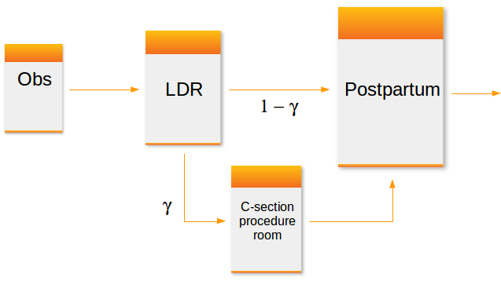
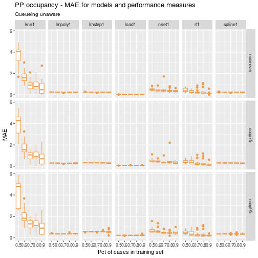
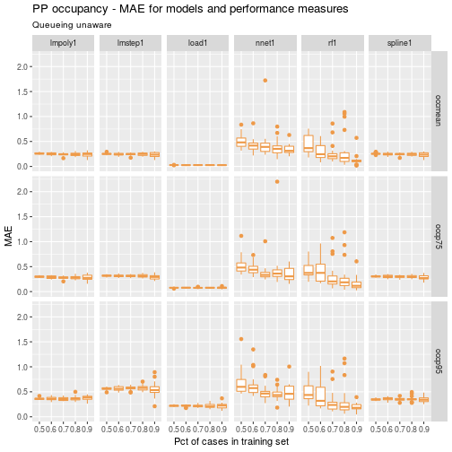
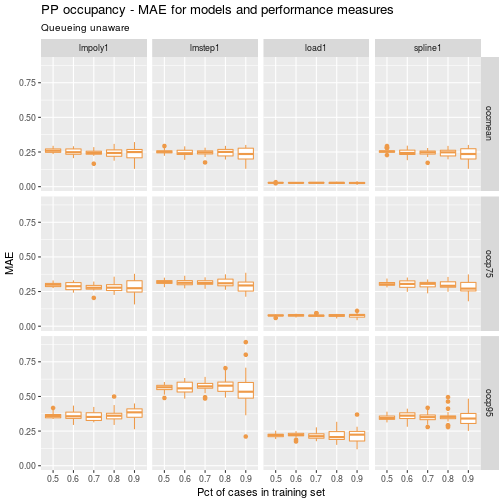
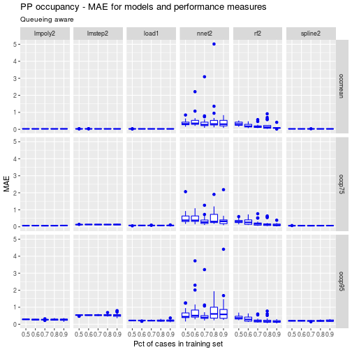
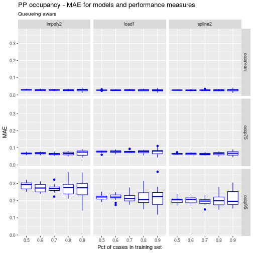

Exploration of metamodels for simulation models of patient flow systems (Part 1)#
Simulation metamodeling involves building predictive models based on outputs of designed simulation experiments. In this series of posts we’ll share our experience with using the R package caret for building and comparing several predictive modeling based metamodels including linear models, neural networks, random forests, k-nearest neighbor, and cubic splines.
Introduction#
A typical configuration of hospital units which provide care for women about to give birth might include an observation unit, a labor, delivery and recovery unit (LDR) and a postpartum (PP) unit. Matching the capacity of these units to demand placed on them is important for maintaining smooth patient flow. For example, there should be sufficient capacity in a PP unit so that there is a relatively small probability that a post-delivery patient is blocked in the LDR due to lack of a bed in PP. Of course, complicating the capacity planning process is the fact that there are numerous sources of uncertainty in obstetrical patient care processes. These include the number and timing of patient arrivals, whether or not the patient requires a C-section and the length of stay in each of the three units.

I’m working on a research project involving capacity planning models for these systems. One phase involves building what are known as simulation metamodels. The main components are:
built a discrete event simulation model of a simplified queueing network model of a typical obstetrical patient flow system.
designed and ran a set of simulation experiments involving a range patient volumes, percentages of patients requiring c-section, and unit sizes (numbers of beds). There were 150 scenarios simulated.
post-processed the output using both R and Python (https://github.com/misken/hillmaker) to compute several performance measures related to unit occupancy and patient delays.
now working on building and comparing a number of different statistical/machine learning techniques for predicting occupancy and delay related peformance measures using the experimental inputs (volume, % c-section, unit sizes).
In the simulation world, this last step is known as simulation metamodeling. It has a long history. See any good discrete event simulation text such as Simulation modeling and analysis by Law and Kelton [@Law2000] for an overview. There’s also a nice overview done by R. Barton and available as a free pdf from the Proceedings of the 2015 Winter Simulation Conference [@Barton2015]. Any predictive modeling technique capable of producing real valued output such as neural networks, regression trees, k-nearest neighbor or any number of advanced regression techniques are viable candidates for building simulation metamodels.
As this was my first significant project using caret, I thought it would be helpful to write up some of the challenges faced and share some of the techniques I used to make it easier to compare different models. This resulted in three blog posts:
Analysis of patient flow networks#
In analyzing tandem flow systems with blocking, such as this one, a common and pragmatic approach is to:
decompose the system into a set of models, one for each unit,
intelligently modify key system parameters such as arrival rates and service rates for each unit to heuristically account for blocking and other interunit phenomena,
start by analyzing the last unit in the system since no departures from that unit will be blocked,
work your way backwards using the results from downstream units as needed,
perhaps use iteration to converge upon a final solution.
Decomposition based approaches for approximate analysis of queueing networks has a long history. For special kinds of networks known as Jackson networks, decomposition and analysis of each node (unit in our case) in isolation can be used to exactly analyze the network. Our OB system is definitely not a Jackson network:
non-exponential service times for finite capacity units
Patients enter the LDR for the labor and birth process after leaving the observation (OBS) unit. After delivery and recovery, patients are transferred to the postpartum (PP) unit. Occupancy levels in the LDR are impacted not only by volume and length of stay for the LDR phase but also by congestion levels in the PP unit. If a bed in PP is not available when requested, that patient will simply remain in the LDR until a bed becomes available.
Since we need approximate approaches (and/or simulation), let’s get back to the simulation metamodeling problem at hand. We’ll start with the postpartum unit as it is the last unit visited before the patient leaves the hospital.
Objectives#
Our primary obectives for this first experiment were to:
Compare the ability of popular predictive modeling techniques to accurately predict performance measures of queueing type systems arising in healthcare capacity planning problems,
Assess the value of queueing system domain knowledge embedded in predictive models on model accuracy,
Explore the impact of hyperparameters such as relative size of training and test datasets on model accuracy and model stability.
It is well known that good feature engineering is often important for creating good predictive models. Knowledge of queueing dynamics that we can capture in new predictor variables seems like it has the potential for creating better predictive models. In this first experiment, relatively basic queueing knowledge will be used. Variables based on the concepts of offered load and traffic intensity will be considered. In addition, when predicting percentiles of occupancy, the well known square root law for capacity planning of queueing systems will also be used to engineer new model terms.
Experimental design#
Patient Flow Input Variables#
Key inputs include the patient arrival rate, average length of stay, and capacity of the postpartum unit.
Name |
Math |
Description |
|---|---|---|
|
$\lambda_P$ |
Arrival rate of patients to postpartum (PP) unit |
|
$B_P$ |
Average length of stay in PP |
|
$c_P$ |
Number of beds in PP |
|
$\lambda_P B_P$ |
Arrival rate times average length of stay; a measure of workload submitted to the PP |
|
$\rho_P=\lambda_P B_P/c_P$ |
Traffic intensity; a measure of congestion of PP |
If you’ve studied queueing systems, you know that the
interarrival and service time distributions also matter. In the simulation
model, patient arrivals were modeled with a Poisson process which means
that the interarrival times are exponentially distributed. The postpartum
service times were modeled with two simple discrete distributions - one
for patients requiring a c-section and one for those with a regular delivery.
For this first set of models, only the mean arrival rate (lam_pp)
and the mean service time (alos_pp) were used. Distributional information
is used in later models.
Statistical Modeling Input Variables#
The process of model fitting and validation is characterized by a number of hyperparameters or tuning parameters. It isn’t clear (at least to me) how to pick good values for some of these or how sensitive predictive accuracy and/or model stability is to them. We focused on a few of these in this experiment.
Name |
Description |
Levels |
|---|---|---|
|
Percent of cases allocated to training set |
0.5, 0.6, 0.7, 0.8, 0.9 |
|
Number of train/test partitions to do and use in entire partition, train, predict, summarize cycle |
10, 20 |
|
Number of folds in crossfold validation |
5, 10 |
For now we’ll focus on the results for partition.times=20 and
kfold_number=5. The pct_train_val parameter controlled the percentage of
cases allocated between the training and test datasets. Models were built using
only training data, with k-crossfold validation used to pick the best model.
The number of repititions of the entire process for each model was
controlled by the parameter partition.times. The final models were then
used to make predictions on the test set and several error metrics computed.
Error metrics#
For each model fit instance, we computed root mean square error (RMSE),
mean absolute error (MAE), and mean absolute percent error (MAPE) using
predictions on the . Since
we are just focusing on partition.times=20 for each
value of pct_train_val, the percentage of cases allocated to the training set,
we get 20 observations of each error metric and can look at the distribution
of the error metrics in addition to overall means.
Since many of the models end up fitting quite well and have errors less than one, we’ll focus on the MAE metric (so as not to square numbers < 1).
Model families#
We used a few different models that are widely used and seem applicable to the general regression type problem at hand. In parentheses are the abbreviations used for each of the modeling families.
Linear models based on queueing approximations (load)
Random forests (rf)
Neural networks (nnet)
Cubic splines (spline)
k-nearest neighbor (knn)
Polynomial regression (poly)
Stepwise regression (lmstep)
Each of these is discussed in more detail below, including information about specific R packages used and algorithm parameter settings.
Process physics knowledge#
For all of the modeling families except the linear models with queueing terms,
we considered two different sets of input variables. One set represented a
somewhat “queueing unaware”” modeler who did not used the two engineered
features, load_pp and rho_pp, in their models. Only lam_pp, alos_pp,
and cap_pp were used. In the other set, representing a modeler
with some queueing knowledge, both load_pp and rho_pp were included as
predictor variables. For example, knn1 is a k-nearest neighbor model which
did not include load_pp and rho_pp, whereas knn2 does include these
additional input variables.
Response Variables#
To begin we just focused on mean and percentiles of postpartum occupancy.
Name |
Description |
|---|---|
|
Mean occupancy (number of patients) in PP unit |
|
75th percentile of occupancy in PP unit |
|
95th percentile of occupancy in PP unit |
There are other important response variables such as the probability that a patient gets blocked in the LDR due to the PP unit being full and the amount of time (mean, percentiles) that such blocked patients wait for a PP bed to become available. We’ll explore those variables in subsequent articles.
Model details#
All models were fit using the caret package. Details of the mechanics can be found in the three blog posts mentioned above.
Linear models based on queueing approximations#
The lm() function was used to fit a multiple linear regression model for
each of the response variables.
For mean occupancy, the load_pp variable should be sufficient since
this is an exact relationship for $G/G/m$ queues.
occmean_pp ~ load_pp
For the percentiles, we’ll use an infinite capacity approximation based on the $M/G/\infty$ queue. For such systems, occupancy is Poisson distributed with mean equal to the load placed on the system (arrival rate * average service time). For large values of load we can use a normal approximation to the Poisson to approximate occupancy percentiles. Even for loads as small as 10, the approximation is reasonably accurate assuming a continuity correction is done. For example, to approximate the $95$th percentile of occupancy in a system with load $L$, the normal approximation to the Poisson is:
$$ O_{0.95} \approx L + 0.5 + 1.645\sqrt{L} $$
So, we will fit a simple linear model using lm().
occp95_pp ~ load_pp + I(load_pp ^ 0.5)
The arrivals to the post-partum aren’t technically Poisson but analysis of the simulation output revealed that they are quite close to Poisson. So, it wouldn’t be surprising if the estimates of the y-intercept is close to 0.5 and the slopes are near 1.0 and 1.645 for systems which are not too heavily congested.
Other modeling techniques#
For random forests and all the other techniques, we fit six models - one “queueing physics unaware” and one “queueing physics aware” for each of the three occupancy related response variables. For example,
occmean_pp_rf1: Mean occupancy using random forest, no queueing terms#
occmean_pp ~ lam_pp + lam_pp + cap_pp
occmean_pp_rf2: Mean occupancy using random forest, queueing terms#
occmean_pp ~ lam_pp + lam_pp + cap_pp + load_pp + rho_pp
The same predictors were used to fit models for occp75_pp and occp95_pp.
The randomForest package was used to fit the models. Default
values for parameters were used in the randomForest() function calls.
The nnet package was used to fit the neural network models. Default
values for all parameters except linout were used in the nnet() function calls.
To get regression predictions (instead of classes) we set linout=TRUE.
The gam package was used to fit the cubic spline models. Default values for parameters were used in the function calls.
The knn function from the class package was used to fit the cubic spline models. A preprocessing step was used to center and scale the data. Default
values for parameters were used in the function calls.
The stepAIC function from the MASS package was used to fit stepwise regression models. Default
values for parameters were used in the function calls.
For the polynomial regression models, lm was used, and linear and quadratic
terms were included.
Results#
##
## Attaching package: 'dplyr'
## The following objects are masked from 'package:stats':
##
## filter, lag
## The following objects are masked from 'package:base':
##
## intersect, setdiff, setequal, union
## Read results data
ptps_results_pp_occ_mean_df <- read.csv("data/mmout/pp_occ_mean.csv")
ptps_results_pp_occ_p75_df <- read.csv("data/mmout/pp_occ_p75.csv")
ptps_results_pp_occ_p95_df <- read.csv("data/mmout/pp_occ_p95.csv")
ptps_results_pp_occ_df <- rbind(ptps_results_pp_occ_mean_df,
ptps_results_pp_occ_p75_df,
ptps_results_pp_occ_p95_df)
To make things concrete, here are the 20 rows associated with the following model fit and test instance:
Model =
knn1Pct of cases allocated to training set = 0.7
Performance measure = mean occupancy
ptps_results_pp_occ_df %>%
filter(model=='knn1' & ptrain==0.7 & perf_measure=='occmean') %>%
select(1:3, rmse_test, mae_test, mape_test)
## pm_unit_model_id ptrain sample rmse_test mae_test mape_test
## 1 occmean_pp_knn1 0.7 1 1.0052279 0.2145379 0.007545913
## 2 occmean_pp_knn1 0.7 2 2.0627406 0.5897758 0.016124523
## 3 occmean_pp_knn1 0.7 3 3.4692304 1.0973854 0.024377439
## 4 occmean_pp_knn1 0.7 4 2.7514137 0.8739269 0.022656215
## 5 occmean_pp_knn1 0.7 5 0.3008833 0.0722353 0.002003952
## 6 occmean_pp_knn1 0.7 6 1.8100720 0.4052148 0.009430376
## 7 occmean_pp_knn1 0.7 7 3.5187415 1.6827260 0.051162870
## 8 occmean_pp_knn1 0.7 8 3.0495487 0.9335612 0.020722189
## 9 occmean_pp_knn1 0.7 9 0.8945858 0.3518124 0.011725163
## 10 occmean_pp_knn1 0.7 10 2.4575233 0.6836743 0.017971330
## 11 occmean_pp_knn1 0.7 11 3.4595388 1.0887717 0.025021145
## 12 occmean_pp_knn1 0.7 12 2.0926021 0.5347662 0.016196254
## 13 occmean_pp_knn1 0.7 13 2.9919025 0.9974762 0.025276314
## 14 occmean_pp_knn1 0.7 14 2.3613384 0.8347072 0.020721143
## 15 occmean_pp_knn1 0.7 15 3.1262837 1.2469138 0.027042326
## 16 occmean_pp_knn1 0.7 16 2.8826036 1.0613012 0.025373251
## 17 occmean_pp_knn1 0.7 17 3.0209032 1.1946814 0.035235445
## 18 occmean_pp_knn1 0.7 18 2.4898844 0.6559066 0.014181538
## 19 occmean_pp_knn1 0.7 19 4.1696193 2.1009985 0.062670714
## 20 occmean_pp_knn1 0.7 20 2.9599517 1.4845715 0.074980965
Comparison of load1 to queuing unaware models#
For mean occupancy, we would expect load1 to outperform the queueing unaware versions of the competing models since load1 is based on a queueing relationship that holds for $G/G/m$ models. It does. Let’s see how it does on the occupancy percentiles.
df <- ptps_results_pp_occ_df %>%
filter(kfold_number==5 & partition.times==20) %>%
filter(grepl('load1|spline1|lmstep1|nnet1|rf1|poly1|knn1', model))
ggp <- ggplot(data=df) +
geom_boxplot(aes(x=as.factor(ptrain), y=mae_test), colour="tan2") +
facet_grid(perf_measure~model) +
labs(title = "PP occupancy - MAE for models and performance measures",
subtitle = "Queueing unaware",
x = "Pct of cases in training set", y = "MAE")
ggp

Clearly, knn1 is not competitive. Let’s drop it and replot so that we can compress the y-axis a bit.
df <- ptps_results_pp_occ_df %>%
filter(kfold_number==5 & partition.times==20) %>%
filter(grepl('load1|spline1|lmstep1|nnet1|rf1|poly1', model))
ggp <- ggplot(data=df) +
geom_boxplot(aes(x=as.factor(ptrain), y=mae_test), colour="tan2") +
facet_grid(perf_measure~model) +
labs(title = "PP occupancy - MAE for models and performance measures",
subtitle = "Queueing unaware",
x = "Pct of cases in training set", y = "MAE")
ggp

A few things pop out immediately:
the queueing approximation based models, load1, have both low overall MAE as well as low variability in MAE
the neural networks and random forests don’t fare well. They have both high overall value and high variability in MAE This is somewhat surprising since these techniques are often well suited to capturing nonlinear relationships.
The random forest models seem most sensitive to the train-test partitioning.
Let’s drop the nnet1 and rf1 models to make it easier to compare the various linear models.
df <- ptps_results_pp_occ_df %>%
filter(kfold_number==5 & partition.times==20) %>%
filter(grepl('load1|spline1|lmstep1|poly1', model))
ggp <- ggplot(data=df) +
geom_boxplot(aes(x=as.factor(ptrain), y=mae_test), colour="tan2") +
facet_grid(perf_measure~model) +
labs(title = "PP occupancy - MAE for models and performance measures",
subtitle = "Queueing unaware",
x = "Pct of cases in training set", y = "MAE")
ggp

A few observations:
the load1 model again has lower and more stable MAE values across the samples.
a higher percentage of cases in the training set tends to lead to higher variability in MAE across all the linear models.
commonly used metamodeling techniques such as polynomial regression and cubic splines performed reasonably well.
Comparison of load1 to queueing aware models#
Now let’s repeat the above comparisons but use the queueing aware models - i.e.
those that include load_pp and rho_pp as predictors.
df <- ptps_results_pp_occ_df %>%
filter(kfold_number==5 & partition.times==20) %>%
filter(grepl('load1|spline2|lmstep2|nnet2|rf2|poly2', model))
ggp <- ggplot(data=df) +
geom_boxplot(aes(x=as.factor(ptrain), y=mae_test), colour="blue2") +
facet_grid(perf_measure~model) +
labs(title = "PP occupancy - MAE for models and performance measures",
subtitle = "Queueing aware",
x = "Pct of cases in training set", y = "MAE")
ggp

Clearly the queueing related inputs, load_pp and rho_pp, lead to improved
performance for the competing models. Remember, load1 is already a
queueing approximation based model but one which uses load_pp in a queueing
theory driven way. The other models are simply using queueing model
related inputs in addition to the original volume and capacity related inputs.
While the neural net and random forest models have improved, they still appear to be outperformed by the linear models. Let’s look closer at the polynomial, spline and queueing approximation models.
df <- ptps_results_pp_occ_df %>%
filter(kfold_number==5 & partition.times==20) %>%
filter(grepl('load1|spline2|poly2', model))
ggp <- ggplot(data=df) +
geom_boxplot(aes(x=as.factor(ptrain), y=mae_test), colour="blue2") +
facet_grid(perf_measure~model) +
labs(title = "PP occupancy - MAE for models and performance measures",
subtitle = "Queueing aware",
x = "Pct of cases in training set", y = "MAE")
ggp

For the mean and 75th percentile of occupancy, the three models perform similarly. For the 95th percentile, load1 and spline1 slightly outperforms the polynomical regression model.
Model interpretability and stability#
Let’s explore the coefficients of the fitted models for load1 and poly1.
The trained models created by caret were stored in a rather complex list. So, I
wrote an R script to gather all the fitted model coefficients into a data frame.
This data frame has 100 rows since there were 5 values of ptrain and
partition.times was equal to 20.
# queuing based model - load1 coefficients
load1_mean_coeffs <- read.csv("data/mmcoeffs/pp_occ_mean_load1_coeffs.csv")
load1_p75_coeffs <- read.csv("data/mmcoeffs/pp_occ_p75_load1_coeffs.csv")
load1_p95_coeffs <- read.csv("data/mmcoeffs/pp_occ_p95_load1_coeffs.csv")
load1_mean_coeffs$ptrain <- as.factor(load1_mean_coeffs$ptrain)
load1_p75_coeffs$ptrain <- as.factor(load1_p75_coeffs$ptrain)
load1_p95_coeffs$ptrain <- as.factor(load1_p95_coeffs$ptrain)
# polynomial regression model - poly1 coefficients
poly1_mean_coeffs <- read.csv("data/mmcoeffs/pp_occ_mean_poly1_coeffs.csv")
poly1_p75_coeffs <- read.csv("data/mmcoeffs/pp_occ_p75_poly1_coeffs.csv")
poly1_p95_coeffs <- read.csv("data/mmcoeffs/pp_occ_p95_poly1_coeffs.csv")
poly1_mean_coeffs$ptrain <- as.factor(poly1_mean_coeffs$ptrain)
poly1_p75_coeffs$ptrain <- as.factor(poly1_p75_coeffs$ptrain)
poly1_p95_coeffs$ptrain <- as.factor(poly1_p95_coeffs$ptrain)
Let’s look at the models for the 75th percentile of occupancy for ptrain=0.7.
load1_p75_coeffs %>%
filter(ptrain == 0.7)
## pm_unit_model_id ptrain sample intercept slope_load slope_sqrt_load
## 1 occp75_pp_load1 0.7 1 0.2889593 1.008352 0.5903721
## 2 occp75_pp_load1 0.7 2 0.3258063 1.008224 0.5840773
## 3 occp75_pp_load1 0.7 3 0.3116994 1.008871 0.5836862
## 4 occp75_pp_load1 0.7 4 0.3360193 1.010452 0.5690141
## 5 occp75_pp_load1 0.7 5 0.3498063 1.011646 0.5590474
## 6 occp75_pp_load1 0.7 6 0.3155310 1.009692 0.5765139
## 7 occp75_pp_load1 0.7 7 0.2959349 1.009102 0.5832487
## 8 occp75_pp_load1 0.7 8 0.2860954 1.009727 0.5818735
## 9 occp75_pp_load1 0.7 9 0.2693956 1.008493 0.5914415
## 10 occp75_pp_load1 0.7 10 0.2628473 1.007700 0.5968104
## 11 occp75_pp_load1 0.7 11 0.3387758 1.010829 0.5662158
## 12 occp75_pp_load1 0.7 12 0.2447432 1.007460 0.6011716
## 13 occp75_pp_load1 0.7 13 0.3362630 1.009187 0.5783160
## 14 occp75_pp_load1 0.7 14 0.3094409 1.009444 0.5788988
## 15 occp75_pp_load1 0.7 15 0.2132483 1.004000 0.6312151
## 16 occp75_pp_load1 0.7 16 0.3302913 1.009689 0.5753801
## 17 occp75_pp_load1 0.7 17 0.2325615 1.007789 0.6029448
## 18 occp75_pp_load1 0.7 18 0.2929132 1.010284 0.5773439
## 19 occp75_pp_load1 0.7 19 0.3360432 1.010810 0.5667083
## 20 occp75_pp_load1 0.7 20 0.2571813 1.006646 0.6051993
poly1_p75_coeffs %>%
filter(ptrain == 0.7)
## pm_unit_model_id ptrain sample X.Intercept. lam_pp alos_pp
## 1 occp75_pp_lmpoly1 0.7 1 -87.688291 2.579820 65.099967
## 2 occp75_pp_lmpoly1 0.7 2 -12.162427 2.555547 -2.455481
## 3 occp75_pp_lmpoly1 0.7 3 -73.491714 2.603787 52.874226
## 4 occp75_pp_lmpoly1 0.7 4 3.628048 2.528600 -16.498736
## 5 occp75_pp_lmpoly1 0.7 5 41.462226 2.583363 -49.236971
## 6 occp75_pp_lmpoly1 0.7 6 81.222038 2.522743 -84.228856
## 7 occp75_pp_lmpoly1 0.7 7 -137.371576 2.577796 109.616369
## 8 occp75_pp_lmpoly1 0.7 8 -28.576602 2.568045 12.404693
## 9 occp75_pp_lmpoly1 0.7 9 -21.623492 2.577156 6.089589
## 10 occp75_pp_lmpoly1 0.7 10 67.083738 2.477220 -72.630074
## 11 occp75_pp_lmpoly1 0.7 11 -9.864239 2.531038 -3.316826
## 12 occp75_pp_lmpoly1 0.7 12 -163.789360 2.543246 132.946595
## 13 occp75_pp_lmpoly1 0.7 13 42.064209 2.529504 -49.988497
## 14 occp75_pp_lmpoly1 0.7 14 24.170231 2.590286 -33.514514
## 15 occp75_pp_lmpoly1 0.7 15 6.779503 2.504883 -18.593471
## 16 occp75_pp_lmpoly1 0.7 16 122.976439 2.565841 -121.259978
## 17 occp75_pp_lmpoly1 0.7 17 -118.970123 2.633574 93.266116
## 18 occp75_pp_lmpoly1 0.7 18 -73.219030 2.579481 52.423174
## 19 occp75_pp_lmpoly1 0.7 19 26.355554 2.543214 -36.138816
## 20 occp75_pp_lmpoly1 0.7 20 73.223459 2.528021 -77.390740
## cap_pp X.I.lam_pp.2.. X.I.alos_pp.2.. X.I.cap_pp.2..
## 1 -0.030845067 -0.005741691 -11.3619065 2.601597e-04
## 2 -0.025632428 -0.005083089 3.7516415 2.162221e-04
## 3 -0.040246820 -0.006668308 -8.7096608 3.411388e-04
## 4 -0.018205549 -0.004385510 6.8711698 1.697167e-04
## 5 -0.035890961 -0.005740894 13.9490820 3.077558e-04
## 6 -0.017799964 -0.004654535 21.6469987 2.124188e-04
## 7 -0.026538028 -0.006007476 -21.3407036 2.315027e-04
## 8 -0.024935909 -0.005265262 0.3673775 1.987442e-04
## 9 -0.025219731 -0.005449551 1.7967066 1.800406e-04
## 10 0.001003787 -0.003249230 19.2592239 3.971013e-05
## 11 -0.018766936 -0.004841127 3.6881823 1.926407e-04
## 12 -0.014468823 -0.005145656 -26.5043317 1.491973e-04
## 13 -0.021212189 -0.004545079 14.1846651 1.954244e-04
## 14 -0.043465930 -0.006606853 10.4005853 4.455661e-04
## 15 -0.008669886 -0.003341825 7.1719121 5.156785e-05
## 16 -0.033838814 -0.005887669 29.8724299 3.518421e-04
## 17 -0.045338648 -0.007583201 -17.7135740 4.237847e-04
## 18 -0.025372856 -0.005866851 -8.6069308 2.151193e-04
## 19 -0.024621035 -0.004343342 11.1175351 1.843272e-04
## 20 -0.015682715 -0.004378092 20.1781025 1.405878e-04
A quick perusal of the two data frames suggests that the coefficients in the polynomial regression model, especially those related to average length of stay, vary widely from sample to sample. The load1 model coefficients are very stable across the samples. This stability is desirable from the perspective of interpreting and explaining the model to others as well giving the modeler some confidence that the model is in some sense capturing the essence of the underlyng process physics.
Exploring this question of model stability and interpretability will be the subject of the next post. I’m not exactly sure how to quantify these measures for modeling techniques such as random forests or neural networks. One idea for random forest models would be to look at how consistent the variable importance values are across the 20 different train-test partitions.